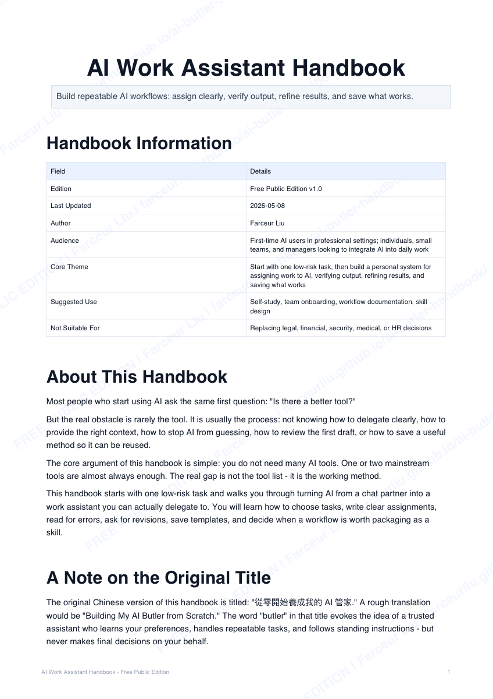

English Overview
Turn AI intorepeatable work
A practical handbook for turning mainstream AI tools into repeatable work processes.Use fewer tools. Delegate better. Verify outputs. Save what works.

The real question is not which AI tool to buy next.
ChatGPT, Claude, Gemini, Codex, Claude Code, and Gemini CLI are already powerful enough for many everyday workflows. The harder question is operational: can you choose the right task, explain it clearly, verify the output, refine the result, and turn the method into something repeatable?
Who this is for
Individual professionals
People who want to use mainstream AI tools for real work, not just casual chat or one-off drafts.
Managers and operators
People responsible for turning AI adoption into repeatable team routines, not scattered experiments.
Workflow builders
People who want to turn useful prompts, scripts, and workflows into templates, SOPs, or reusable AI skills.
The operating loop
Define the goal, source material, constraints, output format, and what the AI must not assume.
Separate facts, assumptions, and open questions before using the result in real work.
Do not just say “make it better.” Name what is missing, risky, unclear, or off-brand.
Save the repeatable part as a template, checklist, script, SOP, or reusable AI skill.
7-day starter path
Adapted from the Chinese edition. Pick one real, low-risk task and follow this rhythm.
Day 1
Complete one low-risk task end-to-end. The goal is a verified first draft, not perfection. (Ch. 2)
Day 2
Turn that first draft into a second version. Write specific corrections, not vague complaints. (Ch. 6, 10, 11)
Day 3
Summarize a real customer or user message into a clean internal note. (Ch. 7.2, 8.2)
Day 4
Review an outbound reply draft for accuracy and risk before sending it. (Ch. 7.3, 15)
Day 5
Pick a scenario from your own job and run a full assign → verify → refine cycle. (Ch. 8)
Day 6
Save your best assignment as a reusable template. (Ch. 16, 19)
Day 7
Reflect: is this workflow stable enough to become a Skill? (Ch. 18)
Safety & disclaimer
This handbook provides general AI workflow methods for self-study. It is not legal, financial, medical, security, or HR advice. AI assistants make mistakes — always verify outputs before acting on them, especially for external communications, financial figures, or consequential decisions. Keep a human in the loop for anything that matters.
Do not feed confidential company data, personal information, credentials, or regulated content into AI tools without confirming your organization’s data policies first. Tool names, interfaces, and capabilities change; treat this handbook as a method guide, not product documentation.
ChatGPT, Claude, Gemini, Codex, Claude Code, Gemini CLI, Notion, Gmail, and Outlook are trademarks of their respective owners. This handbook is independent and is not affiliated with, endorsed by, or sponsored by any of those products or companies.
Free public edition — share the original link freely. Commercial reuse (paid courses, training materials, consulting deliverables, or enterprise training resale) requires the author’s explicit written permission.
Read the English public edition
The English edition is now available as an online reader and a downloadable PDF. It is adapted for international readers rather than translated line by line from the Traditional Chinese edition.
Get in touch
Questions about AI workflow adoption, operations automation, team enablement, or speaking and collaboration opportunities? Connect on LinkedIn or send an email to farceur2021@gmail.com.